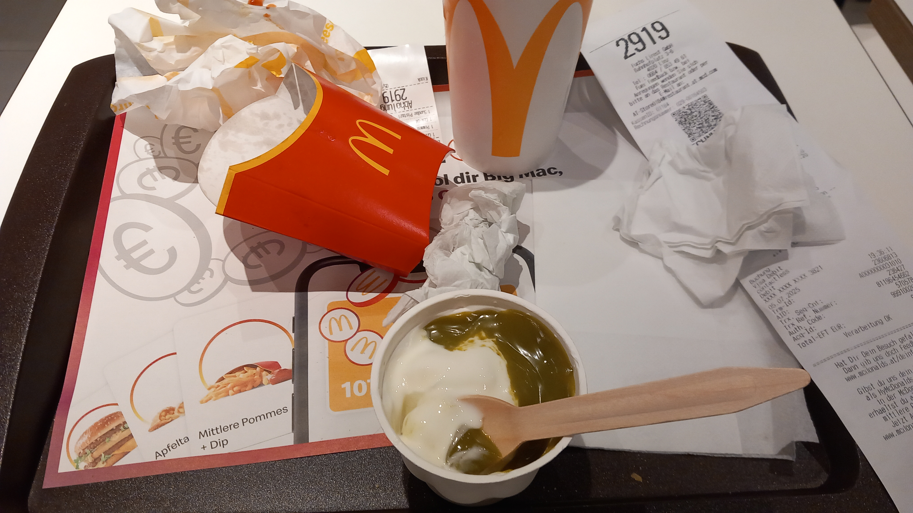

Giovanni's Diary > Chronological > Ephemeris > Entries >
2025-07-05 - Stores closed
Today I made my first irrational action since I am here in Linz. I broke my streak of being a good and responsible stoic and I consciously did something I would usually never do. Let me tell you the full story.
Last night I didn't sleep too well and I didn't wake up fully rested, yet I had to start my day anyway. My plan for today was to study Algorithms and data structures for an exam on September, and get groceries. The first went really well, I went to the central city library in the morning, then came back, had lunch and studied in a common place in my dormitory.
This exam is composed of two written parts lasting an entire year, two projects and a final oral discussing everything prior; I just need to do the oral and I want to study everything deeper than what is required, as I always do, since algorithms are one of the most important areas in computer science. Today I started all the way back from the basics and studied the big-O notation, Its mathematical properties and how to find the complexity of a recurrence function. This is not enough and I still need to do many exercises. If I have some more time I want to prove everything with a proof assistant like Lean4, I am dreaming of this and hopefully I will start investigating this soon.
This morning I also saw a part of the interview between Mr. Rip and Salvatore Sanfilippo the great. He is the creator of Redis and an influential programmer from Sicily, I will watch the whole interview slowly since It is two hours long.
After I was getting tired with studying in the late afternoon I thought I could go out to get dinner and get a few days worth of groceries. However, I was shocked when I discovered that every single food shop, expect restaurants, were closed during weekends 0.0
This is very unusual for me since in Italy all the stores remain open, and I was used to getting my food on the weekend; but here in a city of 200 000+ people all the shops were closed. Literally, the only one open was the eurospar at the station which is 45 minutes for tram from here. Unbelievable.
But I had to take my dinner anyway, so I quickly took the tram toward the eurospar hoping to get everything I needed. During my movements I am reading "Hackers: Heroes of the Computer Revolution", a really great book about the story of the early hackers in the 60' at MIT. I am really hooked, I also cannot do much else since I cannot use internet on my phone outside as I have very limited internet usage outside of Italy in my phone contract.
When I finally arrive to the station (after getting a little lost), I find hundreds of young people - gangster looking - all gathered at the entrance. Apparently this was really the only place open and everyone was here to get some drinks… so I stood in line.
After I could finally enter, I discovered that 80% of the shop was blocked and the only open area was the one with beer, meat and fruits… this means that I could not get the things that I wanted, so I took some bananas and went outside.
This made me quite dissatisfied, how is It possible that I have no way to buy basic food in the city? Maybe Italy is not that bad after all. With this feeling of emptiness, and quite a bit of hunger, I find myself before a McDoanld's and I made the split decision to enter.
Now, I literally never go to McDonald's and I do not understand why people go there. I can have a better and healthier meal at home for 1 or 2 euros, instead people pay 10 or more of an unhealthy amount of burghers in a loud place. Yet, here I am taking a burgher myself, only for this night, while reading today's HackerNews top post - and I wasn't even full afterwards.
I don't feel proud of this at all, I consider It a stupid decision that I made emotionally and I would have never done It if I took more time to think. That money could have been spent much wiser in other things. Anyway, here we are.

Figure 1: Dinner at McDonald's
Expenses so far:
Expenses ||
------------------------------------++-----------
expenses:food || $31.82
expenses:food:non-essential || $9.20
expenses:household:bathroom || $7.86
expenses:household:kitchen || $8.74
expenses:household:washing-machine || $7.49
expenses:legal || $19.92
expenses:non-essential || $4.45
expenses:rent || $1406.00
expenses:travel:arrival || $39.47
expenses:travel:public-transport || $60.50
------------------------------------++-----------
|| $1595.45
Ah btw, happy birthday to me! I almost forgot It.